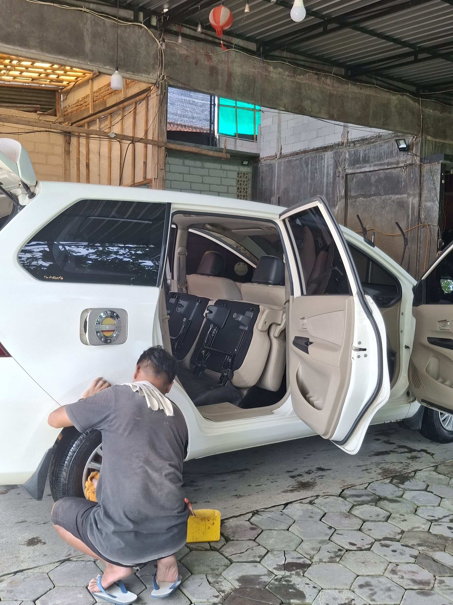
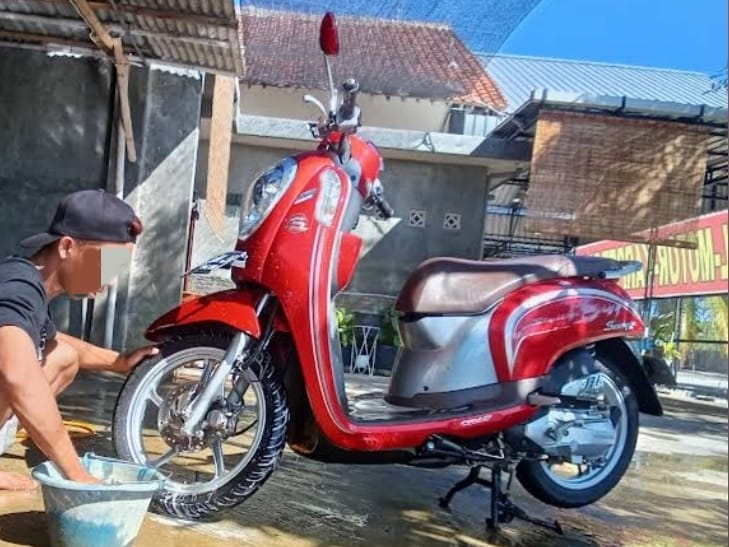
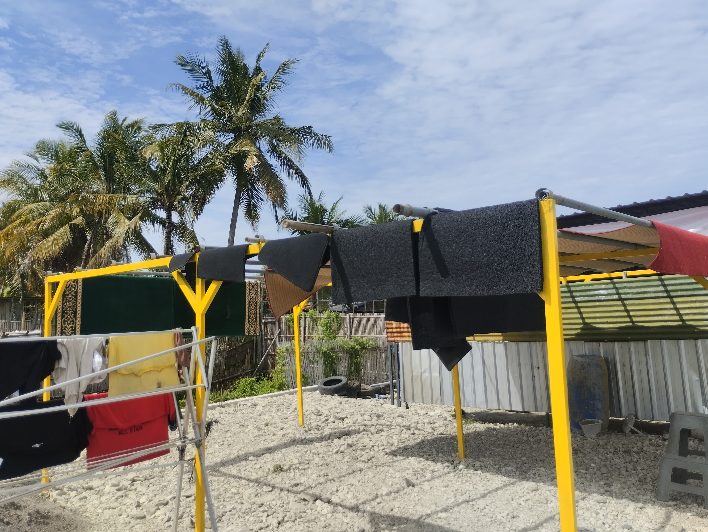
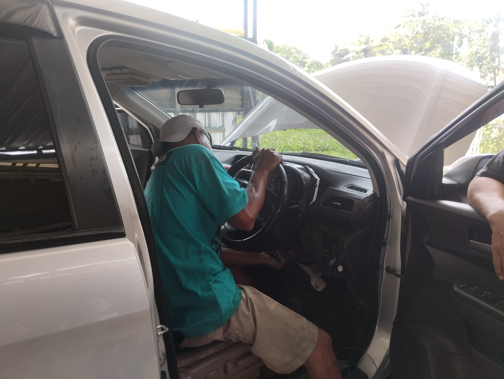
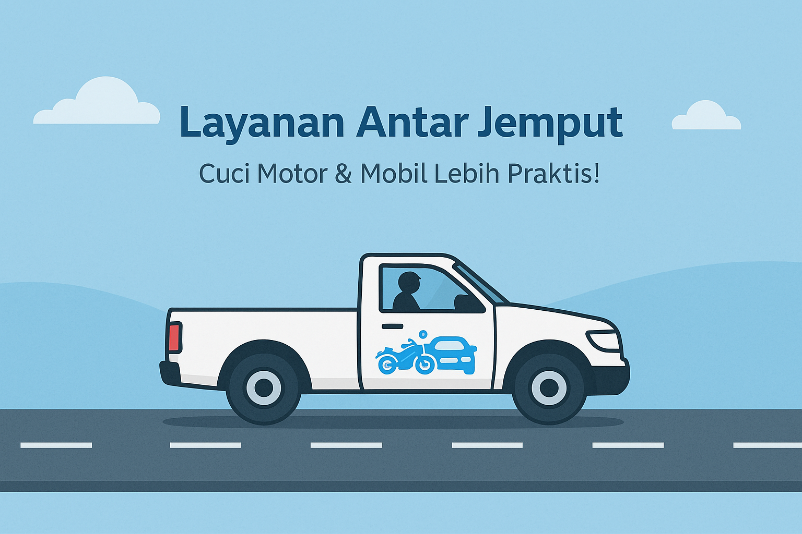

Melayani Cuci, Detailing dan Bengkel
POLESTEAM adalah pusat perawatan dan perbaikan kendaraan terpercaya yang menghadirkan solusi menyeluruh untuk kebutuhan kendaraan pribadi maupun operasional Anda.
Didukung oleh tenaga ahli berpengalaman, teknologi peralatan terkini, serta penggunaan produk premium yang aman dan ramah lingkungan, POLESTEAM menyediakan berbagai layanan unggulan seperti:
Kami tidak hanya fokus pada hasil akhir, tetapi juga kualitas layanan dan kenyamanan pelanggan. Kendaraan Anda kami tangani dengan ketelitian dan penuh tanggung jawab, seolah milik kami sendiri.
Dengan komitmen terhadap kepuasan pelanggan, kami terus meningkatkan standar pelayanan dalam hal hasil pengerjaan, waktu penyelesaian, dan suasana ramah yang kami hadirkan di setiap kunjungan Anda.
Berdirinya POLESTEAM tidak lepas dari pengalaman pribadi saat menghadapi masa sulit pandemi COVID-19. Sebelum membuka usaha salon mobil, saya memiliki bisnis di bidang penyediaan barang (suplier) yang bekerja sama dengan pemerintah. Kami bukan pemborong bangunan fisik, tetapi lebih pada pengadaan barang dalam berbagai proyek pemerintahan.
Namun ketika pandemi melanda, seluruh aktivitas pengadaan dihentikan. Tidak ada order yang masuk, sedangkan kebutuhan hidup terus berjalan. Dalam situasi tersebut, saya merasa tidak memiliki keahlian teknis lain yang bisa dijadikan penghasilan. Di tengah keterbatasan itu, saya melihat peluang: jumlah kendaraan yang semakin banyak, namun banyak orang merasa lelah setelah bekerja dan enggan mencuci sendiri.
Dari situlah muncul ide untuk membuka usaha cuci kendaraan. Selain itu, saya juga memiliki pengalaman bekerja di tempat pencucian sebelumnya, yang memberikan bekal penting bagi saya. Kombinasi dari pengalaman tersebut dan kebutuhan mendesak selama pandemi menjadi titik awal saya menekuni usaha ini.
Maka pada bulan Maret 2021, dengan modal semangat, pengalaman, dan keyakinan, saya memulai usaha cucian kendaraan ini. Kini, POLESTEAM berkembang menjadi tempat perawatan kendaraan yang tidak hanya fokus pada hasil bersih dan kinclong, tetapi juga pada kenyamanan dan kepuasan pelanggan.
Menjadi tenmpat cuci dan salon otomotif terpercaya yang mampu meningkatkan taraf hidup, mempertahankan kualitas layanan terbaik, dan membangun kepercayaan pelanggan, melalui kebersihan maksimal serta pelayanan yang ramah dan profesional.
Perawatan mendetail pada bagian dalam dan luar kendaraan untuk mengembalikan tampilan seperti baru.
Cuci mobil secara menyeluruh dengan peralatan modern untuk hasil yang bersih dan mengilap.
Cuci motor secara menyeluruh dengan peralatan modern untuk hasil yang bersih dan mengilap.
Layanan cuci karpet profesional yang mengembalikan kesegaran dan kebersihan maksimal tanpa merusak bahan.
Layanan perbaikan dan servis rutin kendaraan dengan teknisi berpengalaman.
Layanan antar jemput kendaraan untuk memudahkan pelanggan tanpa perlu datang langsung ke lokasi.
"Ayo yang mau detailing coating ceramic murah hasil megah pelayanan mewah bisa hadir disini."
"Yg punya ramah.. hasilnya luar biasa TOP 👏🏻 crew'nya jg cekatan 👏🏻 bakalan langganan cuci lagi!"
"Hasil cucian karpetnya bersih dan wangi, motor juga super kinclong!"
"hasil cucinya yang bersih dan memuaskan"
"Tempatnya luas banget, ownernya juga ramah, karyawannya juga cekatan, hasilnya memuaskan"
"Tempat cuci yg nyaman santai, bisa poles bodi. Bagus. Recommended.."
"nggone adem,mbetaih, resik gawean karo panggonane pun..."
DEPAN MOMONG RESTO, Jl. H.M. Sarbini, RT.02/RW.02, Megabiru, Kawedusan,
Kec. Kebumen, Kabupaten Kebumen, Jawa Tengah 54317